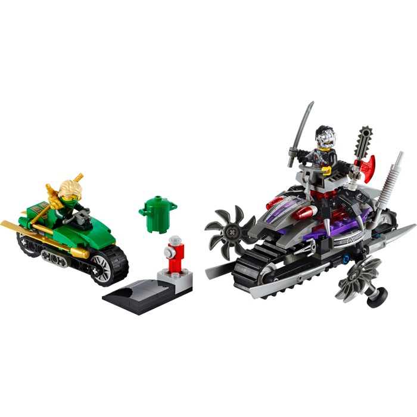

Legos Page 2
Jek-14’s ™ Stealth Starfighter

Pursue the rogue clone, Jek-14™, in his amazing Stealth Starfighter with retractable landing gear, opening cockpit with space for a minifigure, folding wings, rotating and elevating blaster cannon, R4-G0™ astromech droid, storage compartment with holocron and 2 flick missiles. Will Jek-14 escape the Separatist Bounty Hunter™ and the Republic Special Forces Clone Trooper™, or has his power grown enough to face them? Includes R4-G0 astromech droid and 3 minifigures with weapons: Jek-14, Separatist Bounty Hunter™ and Special Forces Clone Trooper™.
top^Droid Tri-Fighter

Chancellor Palpatine™ has been captured and must be taken away before the Jedi are able to retrieve him! Chase them down in the super-agile Droid Tri-Fighter™ with unique tri-wing design. When they come into range, fire the new spring-loaded blasters and release the deadly Buzz Droid™. Those Jedi won’t know what hit them! Includes Chancellor Palpatine™ minifigure and Buzz Droid™, Security Battle Droid™ and Battle Droid™ figures with assorted weapons and an accessory.
top^KAI FIGHTER

Kai has taken over a civilian vehicle and used his Techno-Blade to turn it into an awesome red and gold Ninja Fighter! Take off and weave between the skyscrapers of New Ninjago City with Kai in the cockpit. Shoot the gold-tipped flick missiles into the path of the evil General Cryptor and evade blasts from his ground-to-air laser rocket launcher. Defeat General Cryptor then flip the wings back to engage speed mode and zoom away. Includes 2 minifigures with weapons and an accessory: Kai and General Cryptor.
top^HOVER HUNTER

The evil Nindroid is chasing down Ninja Cole in the fearsome Hover Hunter, featuring a computer dashboard, claw clamps and an adjustable spike seatbelt. With the Nindroid in the pilot’s seat driving at top speed to make the front saw blade spin and rip up the streets, Cole is in great danger. Help Cole dodge the Hover Hunter’s flick missiles and don’t let the Nindroids grab his valuable Techno-Blade. Includes 2 minifigures with weapons: Cole and Nindroid.
top^OVERBORG ATTACK
Cyrus Borg has been transformed by technology into OverBorg, and is on a mission to control New Ninjago City and capture the Green Ninja. Help the Green Ninja escape to safety on his super-slick cycle with golden blades. The OverBorg has powered up in his mech chair and is giving chase on his all-terrain tank bike, churning up the road with the two fast-spinning, slicing circular saw blades. Evade the tank bike’s lasers then accelerate onto the ramp and soar over OverBorg’s fearsome machine! Includes 2 minifigures with weapons and accessories: OverBorg and Lloyd.